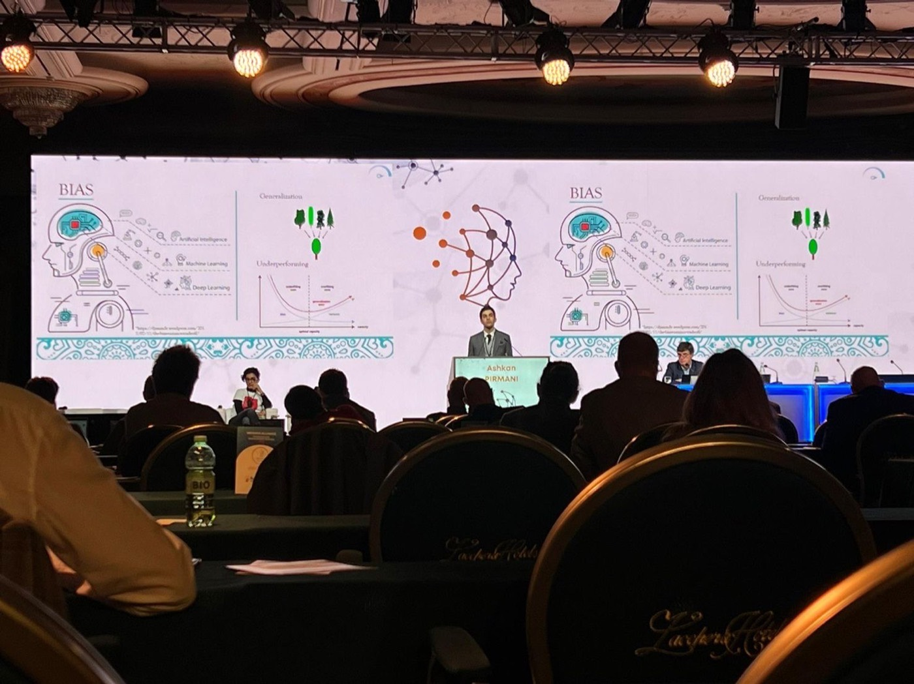

Work / Talks
Talks
Where I have gone to explain this work, and who I explained it to. Newest first. Invited means someone asked me to come. Conference means I submitted it and it was accepted.


All talks
ConferenceMedical Informatics Europe 2026, Genova
Lessons learned from FL4E, and why we retired it instead of building a second version. The paper: Good for all, not good enough for one.
SeminarKU Leuven, Department of Electrical Engineering
Personalized federated learning in clinical settings.
IndustryRoche, federated learning team for multiple sclerosis
Federated prediction of disability progression from records of everyday care.
SeminarNorth American Society of Artificial Intelligence in Multiple Sclerosis
Routine clinical records and federated modeling.
ConferenceECTRIMS 2025, Barcelona
FLoRank. Abstract accepted and awarded a personal grant for scientific quality. ECTRIMS runs the largest multiple sclerosis research congress in the world.
CommunityFlower Monthly
Invited by the Flower community, one of the most widely used open federated learning frameworks.
ConferenceECTRIMS 2024, Copenhagen
Abstract and poster.
ConferenceMedical Informatics Europe 2024, Athens
Unlocking the power of real world data: a framework for sustainable healthcare.
InvitedMultiple Sclerosis Data Alliance, Baveno
Scaling up real world data research across the alliance, a global collaboration of registries and consortia.
Let's talk.
If your question depends on health data that can't simply be put in one place, I probably want to hear about it.